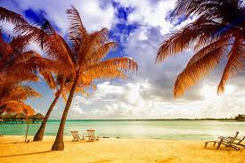

Des îles enchanteresses et attachantes nimbées de mystère, aux doux noms d’« îles Sous-le-Vent », « Marquises », « îles Gambier », « îles Australes »... Une végétation luxuriante contrastant avec des plages de sable blanc frangées de cocotiers posées à fleur d’eau aux mille nuances de bleu… La réputation de la Polynésie française n’est plus à faire : ici tout n’est qu’ordre et beauté, luxe, calme et volupté. Un voyage en Polynésie est un séjour au paradis. La promesse de vacances idylliques. De la pension de famille de Taha'a, verdoyante île escarpée, au resort de la célébrissime Moorea, dont la silhouette de château-fort domine la sublime baie de Cook, dans une villa sur la plage ou un luxueux bungalow sur pilotis au milieu du lagon de Bora Bora, laissez-vous emporter par le mythe de Tahiti et ses îles. Le décor exotique, tout droit sorti d’un rêve, est idéal pour un voyage de noces en Polynésie. Une harmonie parfaite. Un enchantement de tous les sens. Enivrez-vous des odeurs de tiaré, de la douce quiétude qui caractérise ce territoire français du bout du monde. Farniente sur le sable fin, snorkeling, plongée sous-marine, balade en pirogue et en bateau à fond de verre...
Bienvenue à Tahiti, la plus grande île de l’archipel, porte d’entrée de la Polynésie française. Ici, on vous accueille traditionnellement avec un collier de fleurs… et vous entrez immédiatement dans l’ambiance polynésienne ! Pour un séjour ou un voyage de noces au paradis, plongez dans notre offre de voyages à Tahiti, du plus classique au plus insolite, ou faites appel à nos spécialistes pour concocter l’échappée sur mesure de vos rêves. Joyeuse métropole, Papeete recèle de trésors : le musée de la perle, le temple Paofai, le parc Bougainville, les restaurants ambulants sur la place Vaiete, où vous goûtez aux meilleurs poissons crus à la tahitienne, la vie nocturne, les festivités du Heiva en juillet… Sur son marché coloré, poissons à profusion, vanille, fruits exotiques, paniers, chapeaux tressés et fleurs éveillent les sens et la curiosité. Un dépaysement total entre folklore, chants, couleurs et senteurs. Amoureux de randonnée, vous partez ensuite en 4X4 à la découverte de la nature somptueuse de l’intérieur de l’île. Ici rien n'a changé… Vallée profondes et montagnes escarpées, fougères géantes, cascades spectaculaires, sites archéologiques et marae empreints de légendes… Au large des plages de sable noir, dauphins et baleines croisent en saison. Passionné de surf, cap sur le village de Teahupo'o et sa vague mythique qui réunit les meilleurs surfeurs du monde entier.
La traversée en ferry depuis Papeete ensorcelle, quand se découpe à l’horizon la silhouette de Moorea... Entre lagon au dégradé de couleurs allant de l’émeraude au turquoise, plages de sable blanc et jardins endémiques verdoyants, l’île sœur de Tahiti bénéficie d’un environnement naturel préservé aux allures de carte postale. Lors de votre voyage à Moorea, laissez-vous aller au rythme de la vie polynésienne et ressentez la douce quiétude du Pacifique Sud, celle qui a attiré peintres et poètes. Essayez-vous aux activités nautiques, découvrez la beauté des fonds marins peuplés de poissons papillons, cochers et trompettes, de raies et de tortues lors d’une sortie snorkeling ou plongée bouteilles, partez en excursion à la découverte des forêts qui s’élancent à flancs de montagne, des marae, ces lieux de culte ancestraux, desbaies de Cook et d'Opunohu... Découvrez nos idées de séjours à Moorea, en hôtel, pension de famille ou villa, et notre palette de voyages sur mesure et croisière faisant escale dans ce petit coin de paradis aux senteurs de tiaré, hibiscus et frangipaniers.
C’est un lagon sublime, sans doute le plus beau du monde, que l’on découvre d’abord lors d’un voyage à Bora Bora, en se posant sur le motu de l’aéroport. Un lagon ourlé de plages de sable blanc, dont la symphonie de bleus est rehaussée par la silhouette sombre de son volcan, où les plongées sont magiques, dans les eaux chaudes et cristallines de Polynésie française. Snorkeling au milieu des raies, requins à pointes noires et poissons multicolores qui s’amusent dans leur jardin de corail à frôler les invités trop curieux, kayac, paddle board, tour en pirogue… cette piscine naturelle est un terrain de jeux fantastique. L’incarnation du rêve polynésien. Changement de décor sur la terre, tout aussi féérique, à la découverte de la jungle tropicale exubérante, des villages tranquilles, des églises pittoresques, sur les pas de Paul Gauguin ou de Paul-Émile Victor. Le mont Otemanu offre de magnifiques balades et un spectacle inoubliable au coucher du soleil. Les maraes et les vestiges de la Seconde Guerre mondiale, que l’on peut rejoindre à vélo (l’île ne mesure que 8 km du nord au sud et 5 km d'est en ouest), content un pan de l’Histoire. Vos journées s’achèvent les pieds dans le sable pour un dîner romantique, avant de rejoindre votre bungalow sur pilotis, écrin d’un séjour décidément paradisiaque... Laissez-vous séduire par nos idées d’escapades sur mesure et croisière à Bora Bora, la bien nommée « Perle du Pacifique », incontournable lors d’un voyage au cœur de l’archipel mythique des îles de la Société (qui compte aussi les célébrissimes Tahiti et Moorea). Pourquoi pas pour votre voyage de noces ou une nouvelle lune de miel ?
Un voyage en Polynésie française est une invitation à la détente au paradis, bercé par le souffle des alizés et le son des vagues lascives qui s’échouent. Nos experts des perles du Pacifique vous dévoilent les plus belles plages, les plus belles adresses, pour profiter d’un spectacle que l’on contemplerait à l’infini et combiner luxe & prestige ou écotourisme. À Moorea, les somptueux jardins tropicaux du Sofitel Ia Ora, où flotte le parfum entêtant des fleurs de tiare, mènent à la magnifique plage de Temae. Bordée par des eaux d’un bleu turquoise intense, où les patates de corail hébergent un curieux monde de poissons multicolores, cette plage de carte postale offre le cadre idéal pour un voyage de noces ou un voyage à deux, en amoureux. Sous les cieux magiques de Bora Bora, la sublime plage de Matira transforme elle aussi le rêve de rivage parfait en réalité. Posons le décor. Une large langue de sable blanc... Un lagon turquoise scintillant de mille feux sous les rayons du soleil... Une beauté insolente qui devient l’un des plus beaux souvenirs de votre séjour polynésien.
Lagons cristallins ceinturés par une longue barrière de corail, plages étincelantes, motus déserts et plongées sensationnelles dans les plus beaux spots de la planète : la Polynésie est un véritable aquarium naturel qui cristallise tous les rêves des plongeurs en quête de paradis marins. Poissons tropicaux, tombants vertigineux, anémones, patates de corail aux couleurs féeriques… la richesse sous-marine du Pacifique est à portée de palme, que vous soyez débutant ou certifié. Du grand spectacle en communion avec l’océan. L’éventail de sites est exceptionnel, dans tous les archipels. Dans les lagons de Tahiti et ses îles, autour de quelques épaves ou canyons creusés dans le récif, on croise des poissons clowns, trompettes, perroquets ou soldats, des balistes titans, des napoléons, des murènes, des tortues évoluant à de faibles profondeurs. La passe de Tiputa, à Rangiroa, est le royaume des requins. Dans l’archipel des Tuamotu, Fakarava, la plus grande passe de Polynésie, est mondialement connue pour l’observation d’une faune pélagique d’une densité et d’une diversité exceptionnelles. Nos experts vous dévoilent leur sélection de voyages plongée en Polynésie qui séduira plongeurs et novices qui pourront s’initier dans les clubs de l’archipel ou s’adonner au plaisir du snorkeling avec masque-tuba. Jetez-vous à l’eau (les conditions de plongée sont excellentes toute l’année, dans une eau à 27° minimum) et vivez des expériences uniques en effectuant une plongée de nuit à Tahiti, en nageant avec les saisissants requins tigres à Moorea ou les raies Manta à Bora Bora. D’août à octobre, la rencontre avec les baleines à bosse est un must.